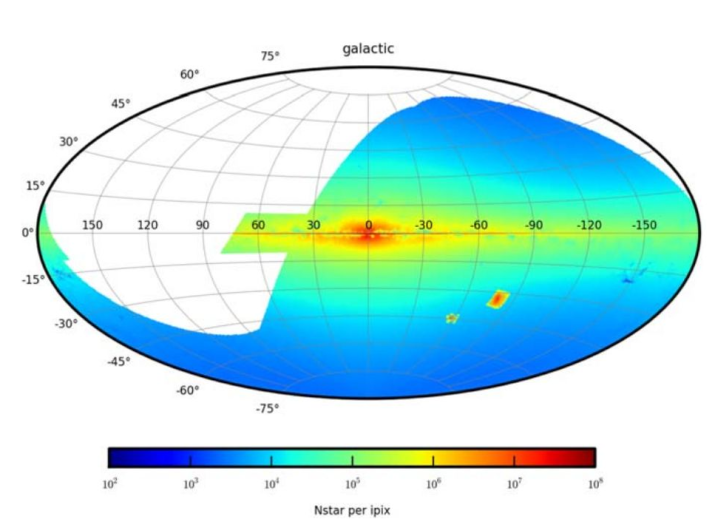
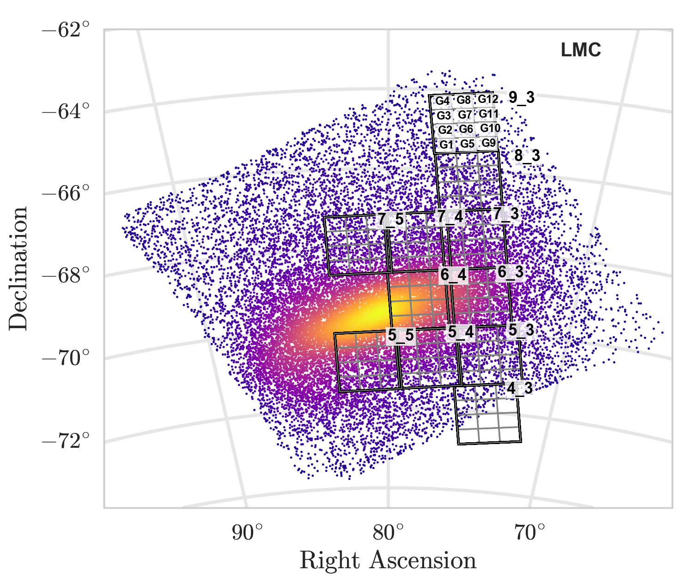
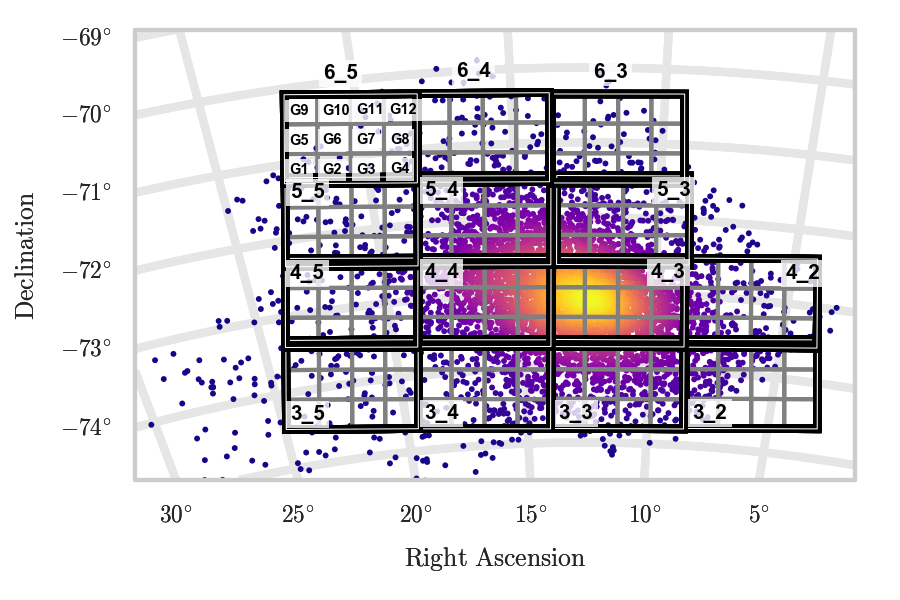
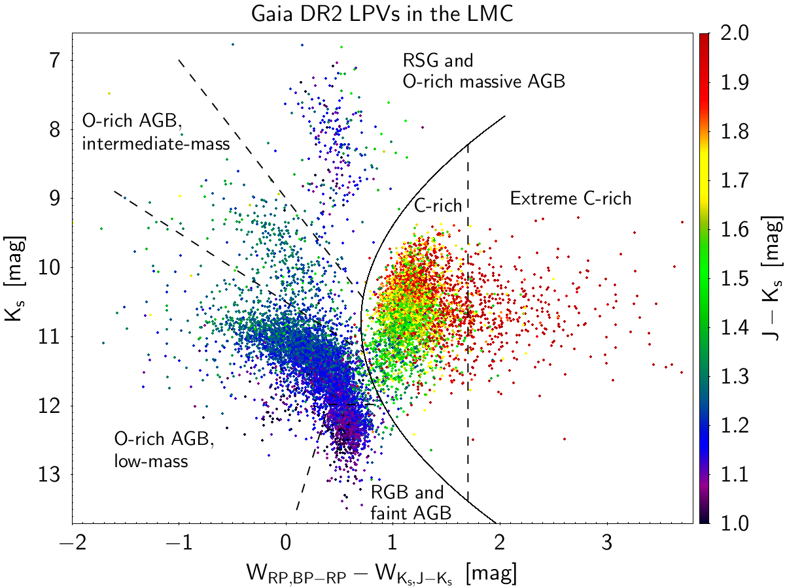
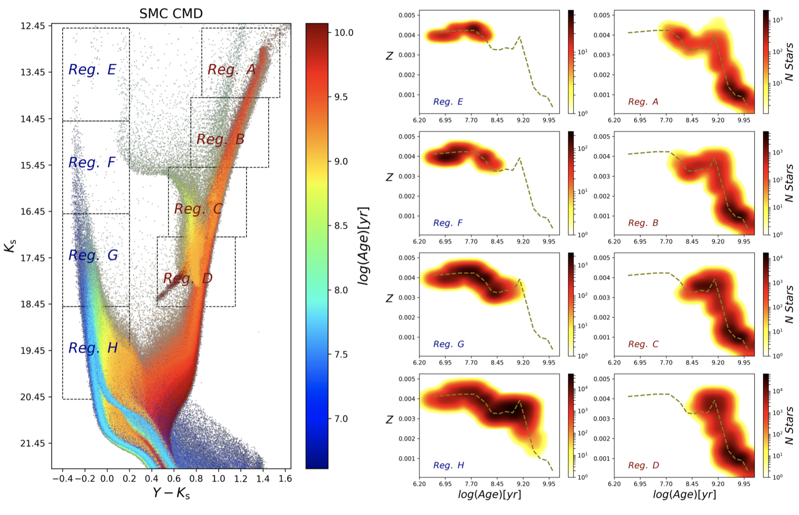

Simulating the Legacy Survey of Space and Time Stellar Content with TRILEGAL
We describe a large simulation of the stars to be observed by the
Vera C. Rubin Observatory Legacy Survey of Space and Time (LSST).
The full catalogs containing 10.6 billion single stars
and 1.61 billion binary systems are available at the NOIRLab Astro Data Lab
and are accompanied by
Jupyter Notebook Tutorials .
Catalogs: Single stars
and
Binary stars
Dal Tio P., Pastorelli G. et al. 2022, ApJS, 262, 22

Calibration of TP-AGB models in the LMC
We extend the calibration of TP-AGB models in the SMC to the more metal-rich LMC galaxy.
We focus on the effect of the third dredge-up, and we identify a best-fitting model that matches
the star counts and the luminosity functions of the observed AGB stars in the LMC
Calibrated stellar isochrones publicly available through the CMD web interface.
Pastorelli G. et al. 2020, MNRAS 498, 3283

Calibration of TP-AGB models in the SMC
We put stringent constraints on mass loss and third dredge-up by comparing the star counts
and the luminosity functions of the observed AGB stars in the SMC with their synthetic counterparts.
For this work we calculated more than 30 sets of TP-AGB tracks and we identify two best-fitting models.
The calibrated stellar isochrones are available via the CMD web interface.
Pastorelli G. et al. 2019, MNRAS, 485, 5666

AGB stars in the Gaia-2MASS diagram
We present a photometric tool (the Gaia-2MASS diagram) to identify
the evolutionary stage, the chemical types and the initial masses of the population
of Long Period Variables in the LMC.
The interpretation of this diagram is based on population synthesis simulations
and TP-AGB evolutionary tracks calibrated in the Magellanic Clouds.
Lebzelter T., Mowlavi N., Marigo P., Pastorelli G. et al. 2018, A&A, 616, L13

The SFH of the SMC from the VMC photometry
We derive the spatially-resolved SFH of the main body of the SMC,
using the deep near-infrared photometry of the Vista survey of the Magellanic Clouds.
The outcome of this work is a robust estimate of how star formation rate, metallicity, distance, and extinction
vary across the SMC.
Rubele, S., Pastorelli, G., et al. 2018, MNRAS 478, 5017
